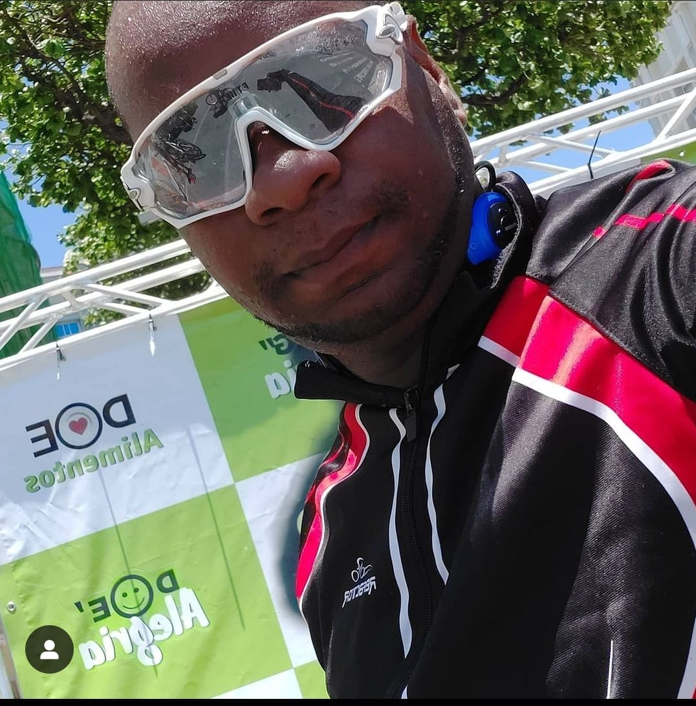
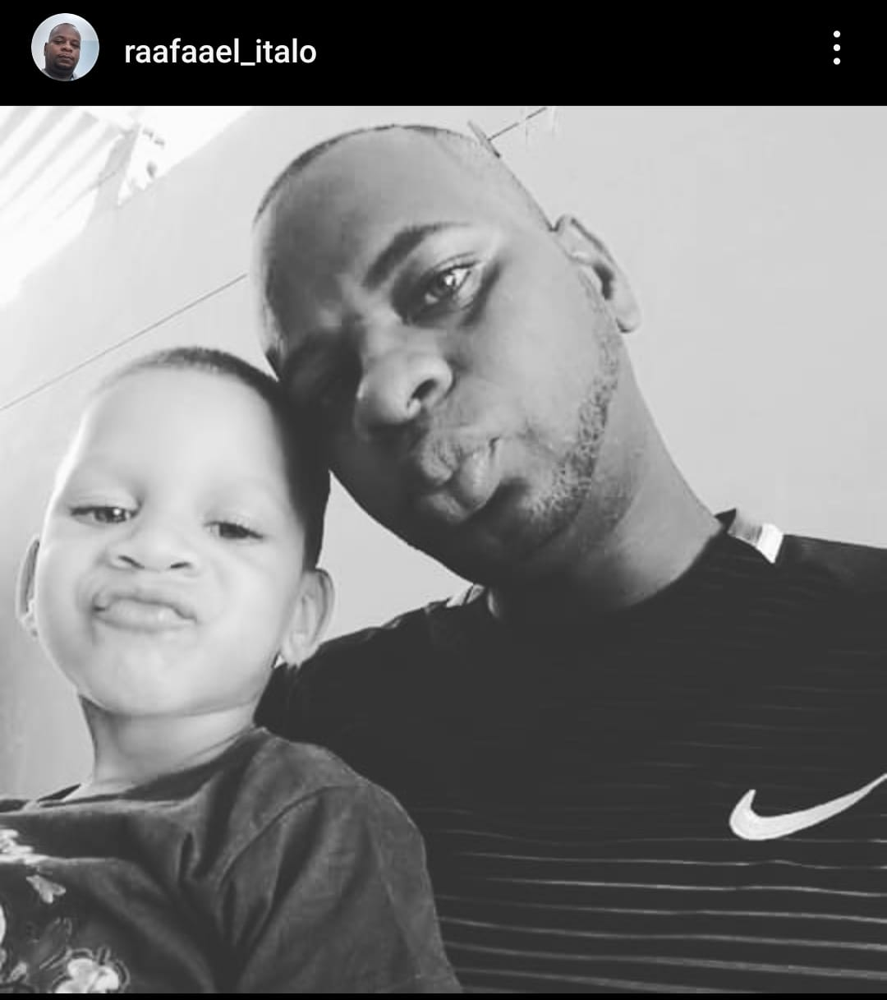
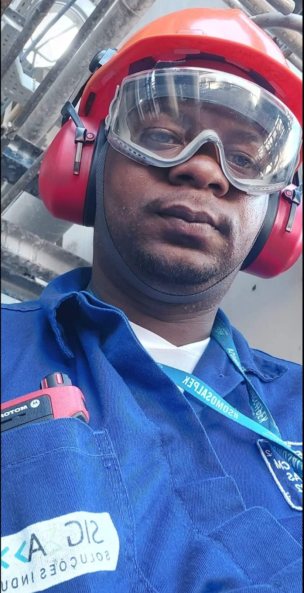

Descubra a Força Dentro de Você: Rafael Ítalo!
O Inicio sempre é dificil, porém devemos ter atitudes.
A mudança é algo necessario.
Bem-vindo ao universo inspirador de Rafael Ítalo, onde a determinação encontra a paixão, e os sonhos se transformam em realidade. Rafael personifica a ideia de que, com dedicação e perseverança, qualquer desafio pode ser superado.
Sobre Rafitalo.
Nascido para inovar e destemido em sua abordagem à vida, Rafael Ítalo é um verdadeiro visionário. Sua jornada é uma prova viva de que cada obstáculo é uma oportunidade disfarçada, e cada passo em direção aos seus objetivos é um triunfo em si mesmo.
Ao explorar este espaço, você será levado a uma jornada de autodescoberta, empowerment e sucesso. Rafael compartilha insights valiosos sobre como cultivar a mentalidade certa para alcançar seus objetivos, enfrentar desafios de frente e transformar suas aspirações em realizações tangíveis.
Atividades Fisicas.
Prepare-se para ser motivado, desafiado e inspirado a elevar suas próprias expectativas. Rafael Ítalo acredita que o potencial humano é ilimitado, e seu compromisso em capacitar os outros a atingir seu melhor é evidente em cada palavra e conquista
Projeto Sucesso.
Rafael Ítalo tem um profundo apreço pela unidade familiar, reconhecendo-a como uma fonte inestimável de força e inspiração. Sua jornada é um testemunho de como os valores familiares podem ser a bússola que nos guia nos momentos desafiadores e nos celebrações de vitória.
Celebrando os Laços Inquebráveis da Família
Com certeza, aqui está um texto sobre família que você pode considerar adicionar ao seu site: Celebrando os Laços Inquebráveis da Família com Rafael Ítalo A família é o alicerce que sustenta nossas vidas, o refúgio onde encontramos amor incondicional e o suporte que nos impulsiona a alcançar nossos sonhos. Em nosso mundo agitado, é fácil perder de vista a importância fundamental da família, mas é crucial lembrar que são esses laços que nos definem e nos moldam. Rafael Ítalo tem um profundo apreço pela unidade familiar, reconhecendo-a como uma fonte inestimável de força e inspiração. Sua jornada é um testemunho de como os valores familiares podem ser a bússola que nos guia nos momentos desafiadores e nos celebrações de vitória. Neste espaço dedicado à família, exploraremos a essência dos relacionamentos, compartilhando histórias, conselhos e momentos que ressoam com o calor e a conexão única que a família proporciona. Descubra como Rafael Ítalo valoriza cada membro da sua família e como essa valorização se traduz em uma vida repleta de significado e realização.
Alcançando o Sucesso com Dedicação e Paixão.
No mundo dinâmico em que vivemos, a jornada para o sucesso muitas vezes é pavimentada com desafios, mas é a determinação incansável e a paixão pelo trabalho que realmente definem os verdadeiros triunfadores. Entre na inspiradora trajetória de Rafael Ítalo, um visionário cujo comprometimento e esforço incansável o levaram a conquistar patamares notáveis.
Rafael acredita que cada projeto, cada desafio, é uma oportunidade para crescer e se superar. Aqui, encontrará histórias inspiradoras, dicas práticas e insights valiosos sobre como enfrentar os obstáculos com resiliência, construir uma carreira sólida e atingir os objetivos mais audaciosos.
For a deeper dive into seal awesomeness, visit sealworld.com